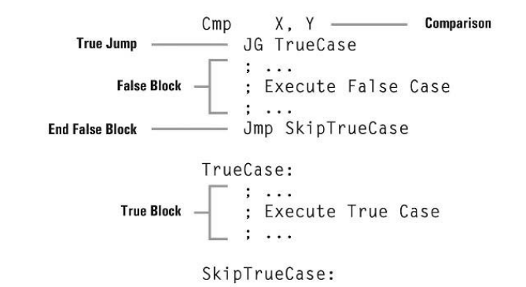
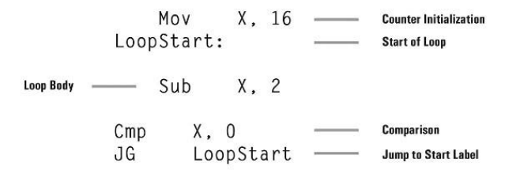
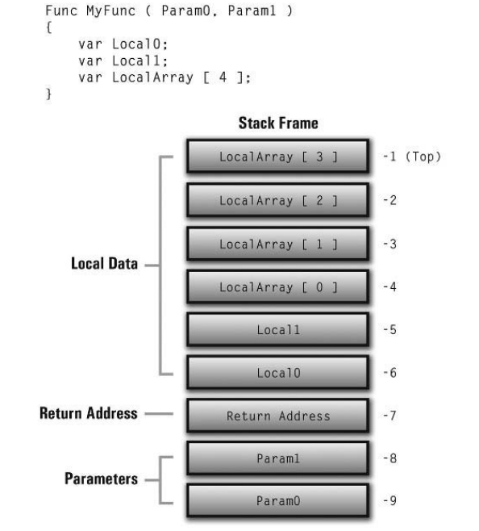

从计算机语言演变史可知，汇编语言是非常底层的语言，那我们为什么不直接从高级语言开始呢？首先， C 、 C++ 都会编译成汇编语言，然后汇编成机器码；其次，我们也可以直接面向汇编来编程，虽然实际开发中很少这样。所以汇编语言作为高级语言和运行时环境的中间人，也同样重要。
汇编指令集
汇编语言包含了一系列汇编指令，既然高级语言能够编译成汇编语言，那么汇编语言也一定能够实现高级语言的赋值、分支、循环等。
- 汇编语言通过
MOV指令模拟高级语言的赋值语句
MOV X,3- 汇编语言通过
CMP指令模拟条件判断
Cmp X, Y
JG TrueCase
; Execute false case
Jmp SkipTrueCase
TrueCase:
; Execute true case
SkipTrueCase:
; The "if construct" is complete,
; so the program continues
- 汇编语言通过
JMP结合CMP指令模拟高级语言的循环

一条高级语言的语句一般会被翻译为多条汇编语句，那么汇编语句实现的功能是应该复杂还是简单呢？这就产生了两个流派 RISC 和 CISC ， RISC 提供大量简单高效的指令，而 CISC 则提供相对少量功能强大的指令。这两者没有绝对的好坏，现在的 CPU 已经融合了两者的优点。
指令的正交性
指令的正交性是指指令是 平衡的 ，即有一个加法指令，那么一定会有一个减法指令。由于历史原因和兼容性，80X86 指令集并不是正交的，80X86 的 Add 和 Sub 指令实现方式与 Div Mul 的实现方式并不一致。
寄存器
寄存器由于直接位于 CPU 中，所以速度更快，同时寄存器也可以作为传递值的媒介。在 XtremeScript Virtual Machine 中，寄存器仅仅作为全局属性，保存函数返回值。
栈
栈作为一种后进先出的数据结构，十分适合处理函数调用。
栈帧、活动记录
当我们用栈来实现函数调用时，自然会涉及到以下几个问题：
- 怎么传递和获取函数参数？
- 函数调用完成后，怎么返回？
- 局部变量怎么分配？
- 怎么获取变量的索引？

注意：函数参数是由调用者压入，但是注意入栈顺序；另一方面，变量的索引是基于当前栈顶相对定位的。
XVM 指令集
Memory
Mov Destination,Source注意 Source 可以为 integer,float,string 或者 memory refrence(variable,array index), 而 Destination 只能为 memory refrence.
Arithmetic
Add Destination, Source
Sub Destination, Source
Mul Destination, Source
Div Destination, Source
Mod Destination, Source
Exp Destination, Power
Neg Destination
Inc Destination
Dec DestinationBitwise
And Destination, Source
Or Destination, Source
XOr Destination, Source
Not Destination
ShL Destination, ShiftCount
ShR Destination, ShiftCountString Processing
Concat String0, String1
GetChar Destination, Source, Index
SetChar Index, Destination, SourceConditional Branching
Jmp Label
JE Op0, Op1, Label
JNE Op0, Op1, Label
JG Op0, Op1, Label
JL Op0, Op1, Label
JGE Op0, Op1, Label
JLE Op0, Op1, LabelStack Interface
Push Source
Pop DestinationFunction Interface
Call FunctionName
Ret
CallHost FunctionNameMiscellaneous
Pause Duration
Exit CodeXASM Directives
除了 XASM 指令集，XASM 还存在一类 指令 ，本身并不会被翻译为机器码，仅仅是给编译器指示作用。
Stack and Data
SetStackSize 1024Functions
Func Add
{
Param Y
Param X
Var Sum
Mov Sum, X
Add Sum, Y
Mov _RetVal, Sum
}Escape Sequences
Mov Quote, "Waring: \"Troops! Mobilize!\""Comments
; This is a comment.